Bilim tarihi, çoğu zaman erkek isimlerle anılsa da, aslında sayısız kadının azmi ve zekâsıyla şekillenmiştir. Toplumsal önyargılara, üniversite kapılarının yüzlerine kapatılmasına, hatta bazen isimlerinin bilerek görmezden gelinmesine rağmen bu kadınlar bilimin gidişatını değiştirdi. Marie Curie'den Ada Lovelace'e, Mary Anning'den Lise Meitner'e kadar uzanan bu isimler, sadece kendi alanlarında çığır açmakla kalmadı; kendilerinden sonra gelen kadınlara da bir yol açtı. Bu yazıda, fizikten paleontolojiye, matematikten bilgisayar bilimine kadar farklı alanlarda iz bırakmış on üç bilim insanının hikâyesine yer veriyoruz.
Marie Curie
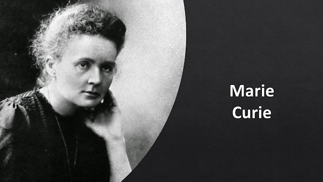
1867'de Polonya'da doğan Marie Curie, radyoaktivite üzerine yaptığı çalışmalarla bilim tarihinin en tanınan isimlerinden biri hâline geldi. Eşi Pierre Curie ile birlikte 1898 yılında polonyum ve radyum elementlerini keşfetti; "radyoaktivite" terimini de bilime kazandıran isim oydu. 25 Haziran 1903'te Sorbonne'da doktora tezini savunarak Fransa'da fen bilimlerinde doktora unvanı alan ilk kadın oldu — bu, aynı yıl kazanacağı ilk Nobel Ödülü'nden yalnızca birkaç ay önceydi. 1911'de kimya dalında ikinci bir Nobel daha kazanan Curie, iki farklı bilim dalında Nobel alan tek kişi olma unvanını hâlâ koruyor.
Kariyeri sadece laboratuvarla sınırlı kalmadı: 1906'da eşi Pierre bir at arabası kazasında hayatını kaybedince, onun yerine Sorbonne'da genel fizik profesörü olarak atandı — bu üniversitede bu göreve gelen ilk kadındı. I. Dünya Savaşı sırasında kızı Irène ile birlikte, cephedeki yaralı askerlerin vücudundaki mermileri bulabilmek için mobil röntgen üniteleri ("petites Curies" — küçük Curie'ler) geliştirip cepheye götürdü. 1914'te Paris'te kurduğu Radyum Enstitüsü'nün ilk direktörü oldu. Yıllarca radyasyona maruz kalması nedeniyle 1934'te lösemiden hayatını kaybetti; bugün bile eski defterleri ve el yazmaları radyoaktif kaldığı için kurşun kutularda saklanıyor.
Mary Anning
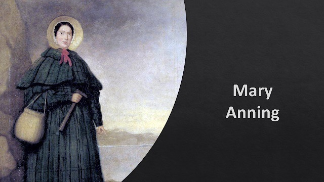
1799'da İngiltere'nin Lyme Regis kasabasında doğan Mary Anning, marangozluk yapan ve amatör fosil koleksiyoncusu olan babasının yanında küçük yaşlardan itibaren fosil aramaya başladı. Babası 1810'da öldüğünde, ailenin geçimini sağlamak için fosil satışına devam etti. 1811'de kardeşi Joseph bir kafatası fosili bulmuş, Mary de bir yıl sonra bu kafatasına ait 5 metrelik iskeletin geri kalanını gün ışığına çıkarmıştı — bu, tam olarak tanımlanan ilk ihtiyozor (balık kertenkelesi görünümlü, dinozor değil, soyu tükenmiş bir deniz sürüngeni) iskeletiydi ve henüz 12-13 yaşındaydı. 1823'te bilim dünyasının tanıdığı ilk eksiksiz plesiyozor iskeletini buldu; bu keşif o kadar tuhaf görünmüştü ki bazı bilim insanları önce sahte olduğunu düşünmüştü. 1828'de ise Almanya dışında keşfedilen ilk pterozor (uçan sürüngen) fosilini buldu.
Kadın olduğu ve toplumsal sınıfı nedeniyle döneminde Jeoloji Derneği'ne bile üye olamayan Anning, bulduğu fosiller bilim insanlarınca tanımlanırken neredeyse hiç kredi alamadı. Bugün ise paleontolojinin kurucu isimlerinden biri olarak kabul ediliyor; "she sells seashells by the sea shore" tekerlemesinin onunla ilişkilendirildiğine dair yaygın (ama kesin kanıtı olmayan) bir gelenek de bulunuyor.
Dorothy Crowfoot Hodgkin
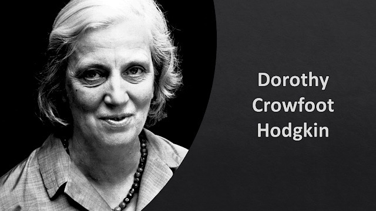
Protein kristalografisinin öncülerinden olan İngiliz bilim insanı Dorothy Hodgkin, biyomoleküllerin üç boyutlu yapısını çözmek için X-ışını kristalografisini ustalıkla kullandı. Kolesterol, penisilin, B12 vitamini ve insülinin moleküler yapısını çözmesi, tıp ve biyokimya için dönüm noktası oldu; penisilinin yapısını çözmesi, kimyasal olarak değiştirilmiş yeni antibiyotiklerin geliştirilmesinin önünü açtı. B12 vitamini üzerine yaptığı çalışmayla 1964'te Nobel Kimya Ödülü'nü kazandı — bugüne dek bu ödülü alan tek İngiliz kadın olma unvanını koruyor.
Hodgkin'in daha az bilinen bir yönü de şu: Oxford'da Somerville College'da kimya okuyan öğrencilerinden biri, ileride İngiltere Başbakanı olacak Margaret Roberts — yani Margaret Thatcher'dı. Thatcher, 1940'ların ortasında Hodgkin'in gözetiminde antibiyotik gramisidin üzerine X-ışını kristalografisi çalışması yapmıştı; ilerideki siyasi görüş ayrılıklarına rağmen ikisi ömür boyu saygılı bir ilişki sürdürdü.
Lise Meitner
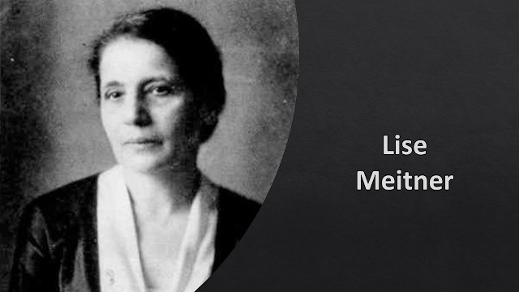
Avusturyalı fizikçi Lise Meitner, nükleer fizik ve radyoaktivite alanında çalıştı. Yahudi kökeni nedeniyle 1938'de Nazi Almanyası'ndan kaçmak zorunda kalan Meitner, İsveç'e sığındıktan sonra da çalışmalarını sürdürdü. 11 Şubat 1939'da yeğeni Otto Frisch ile birlikte yayımladığı "Uranyumun Nötronlarla Parçalanması: Yeni Bir Nükleer Tepkime Türü" başlıklı yazıda, eski çalışma arkadaşları Otto Hahn ve Fritz Strassmann'ın Berlin'de elde ettiği deneysel bulguları kuramsal olarak açıkladı; çekirdeğin "damlacık modeli"ni kullanarak uranyumun parçalanmasından baryum çıktığını gösterdi. Bu olaya "fisyon" adını verdiler ve tek bir fisyon tepkimesinde yaklaşık 200 milyon elektron volt enerji açığa çıktığını hesapladılar — nükleer çağın kapılarını aralayan hesaplardan biriydi bu.
Buna rağmen 1944'te nükleer fisyonun keşfi için verilen Nobel Kimya Ödülü'nü yalnızca Otto Hahn aldı; Meitner'in katkısının göz ardı edilmesi, bilim tarihinin en çok tartışılan Nobel "kayıpları"ndan biri olarak anılıyor. Ölümünden sonra, 109 numaralı element "meitneryum" onun onuruna adlandırıldı.
Barbara McClintock
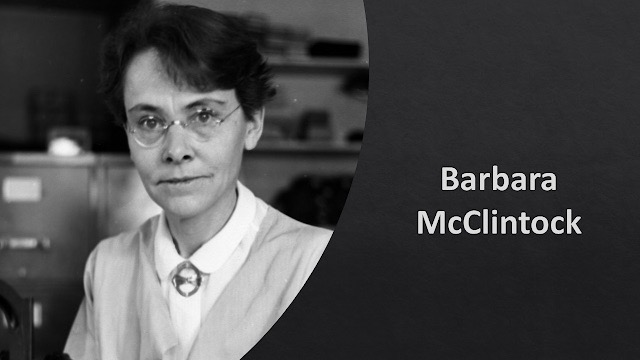
Amerikalı bilim insanı Barbara McClintock, 1927'de Cornell Üniversitesi'nden botanik alanında doktorasını aldı ve 1920'lerin sonundan itibaren mısır bitkisinin kromozomlarını inceleyerek ilk genetik haritalarından birini çıkardı. En büyük keşfi, genomda yer değiştirebilen "transpozon" (atlayan gen) adlı DNA parçalarıydı. 1940'larda Cold Spring Harbor Laboratuvarı'nda büyük ölçüde tek başına yürüttüğü bu çalışma, dönemin bilim camiası tarafından yıllarca kuşkuyla karşılandı ve neredeyse görmezden gelindi. Ancak moleküler biyolojinin ilerlemesiyle bulgularının doğruluğu kanıtlandı ve 1983'te — keşfinden onlarca yıl sonra — Nobel Fizyoloji veya Tıp Ödülü'nü tek başına (paylaşmadan) kazandı.
Jocelyn Bell Burnell
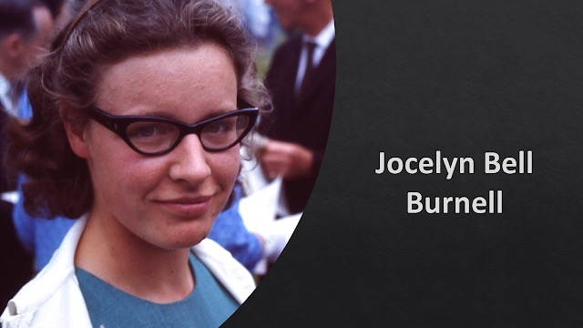
Kuzey İrlandalı astrofizikçi Jocelyn Bell Burnell, henüz Cambridge'de lisansüstü öğrencisiyken, kendi kurduğu radyo teleskopla ilk radyo pulsarlarını keşfetti. Ancak bu keşfe dayanan 1974 Nobel Fizik Ödülü, tez danışmanı Antony Hewish'e (ve gözlemevi yöneticisi Martin Ryle'a) verildi; Bell Burnell'in adı ödülde yer almadı — bilim tarihinin en çok tartışılan "gözden kaçırılma" örneklerinden biri olarak anılıyor. Bell Burnell bu duruma yıllar sonra kamuoyu önünde oldukça olgun yaklaştı; 2018'de temel fizik alanında verilen ve yaklaşık 3 milyon dolar değerindeki Özel Breakthrough Ödülü'nü kazandığında, parayı bilim dünyasında yeterince temsil edilmeyen grupların doktora burslarını finanse etmek için bağışladı.
Rosalind Franklin
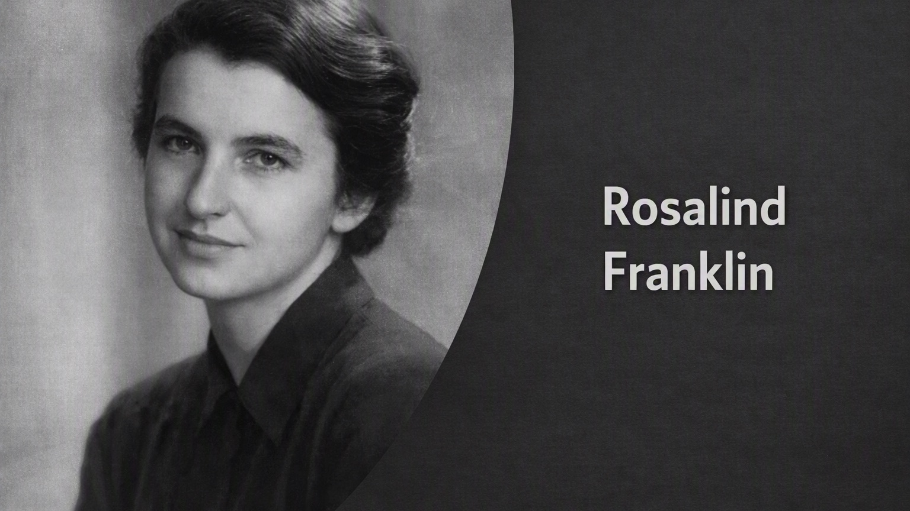
25 Temmuz 1920'de Londra'da doğan İngiliz fizikçi ve X-ışını kristalografisi uzmanı Rosalind Franklin, Cambridge'de kömürlerin mikro yapısı üzerine doktora yaptıktan sonra Paris'te X-ışını kristalografisi alanında uzmanlaştı. 1951'de King's College London'a geçti ve öğrencisi Raymond Gosling ile birlikte DNA molekülünün X-ışını kırınım görüntülerini çekmeye başladı. Mayıs 1952'de elde ettikleri "Fotoğraf 51" adlı kırınım görüntüsü, DNA'nın sarmal yapısının kanıtını gözler önüne seriyordu; Franklin ayrıca DNA'nın iki farklı formu (A ve B) olduğunu göstererek, sarmal başına 10 baz çifti içerdiğini hesaplayan verileri üretti.
Ocak 1953'te meslektaşı Maurice Wilkins, Franklin'in bilgisi ve izni olmadan Fotoğraf 51'i James Watson'a gösterdi; Watson ve Francis Crick bu verilere dayanarak DNA'nın çift sarmal modelini kurdu ve Nisan 1953'te Nature dergisinde yayımladı — Franklin'in kendi yazısı de aynı sayıda, "onların modelini doğrulayan" bir çalışma gibi yer aldı. 1962'de DNA'nın yapısı için Nobel Fizyoloji veya Tıp Ödülü Watson, Crick ve Wilkins'e verildi; Franklin 1958'de henüz 37 yaşındayken yumurtalık kanserinden öldüğü için ödül ölümünden sonra verilemedi. Birkbeck College'da virüs yapıları üzerine yaptığı çalışmalar yapısal viroloji alanının temelini attı. Bugün Watson bile, onun verileri olmadan çift sarmalın kurulmasının "büyük olasılıkla imkânsız" olacağını kabul etmiştir.
Maria Mitchell
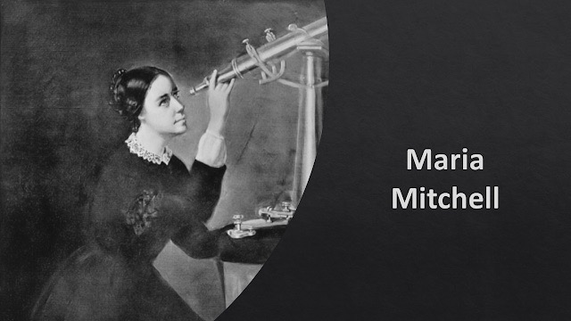
1847'de, henüz iki inçlik küçük bir teleskopla babasının işyerinin çatısından gökyüzünü tararken bir kuyruklu yıldız keşfeden Maria Mitchell, bu buluşuyla "Miss Mitchell'in Kuyruklu Yıldızı" adını ölümsüzleştirdi. Danimarka Kralı tarafından 1832'de ihdas edilen, teleskopla kuyruklu yıldız keşfeden ilk kişiye verilen altın madalyaya layık görüldü — bir kadına verilmesi o dönem için oldukça sıra dışıydı. 1848'de Amerikan Sanat ve Bilim Akademisi'ne seçilen ilk kadın oldu. 1865'te Vassar College'da Amerika'nın ilk kadın astronomi profesörü olarak göreve başladı ve kariyeri boyunca kız çocuklarının fen ve matematik eğitimi alması için aktif biçimde savundu.
Hypatia
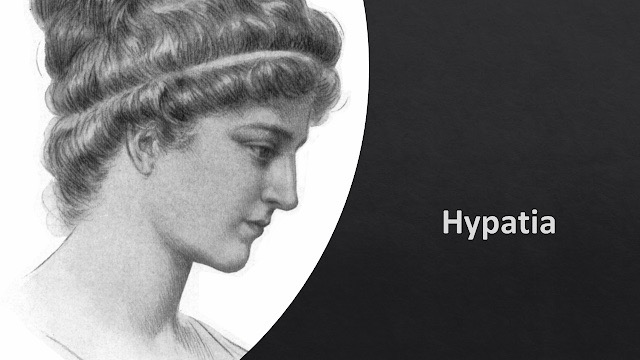
Dönemin ünlü matematikçisi Theon'un kızı olan Hypatia, matematikçi, astronom ve filozof olarak İskenderiye Kütüphanesi'nde ders verdi. Ptolemaios'un Almagest'i ve Diophantos'un Arithmetica'sı gibi klasik matematik-astronomi metinlerinin düzenlenmesi ve yorumlanmasında babasıyla birlikte katkı sağladığı düşünülüyor. Doğayı mantık, matematik ve gözlemle açıklamaya çalışan Hypatia, İskenderiye'deki Platon Okulu'nda; aralarında sonradan İskenderiye valisi olacak Orestes ve Ptolemais piskoposu olacak Synesius'un da bulunduğu, Hristiyan, Pagan ve Musevi inançlardan öğrencilere Platon ve Aristoteles öğretilerini aktardı. (Gençliğinde Atina'da eğitim aldığına dair geç dönem kaynaklı bir gelenek olsa da, modern tarihçilerin çoğu bunu kronolojik tutarsızlıklar nedeniyle güvenilir bulmuyor.)
Hypatia'yı sonuna kadar koruyan Vali Orestes ile onu "dinsizlik"le suçlayan Piskopos Kyrillos arasındaki çekişme, şehir çapında bir gerginliğe dönüştü ve 415 yılında Hypatia'nın bir grup tarafından linç edilerek öldürülmesiyle sonuçlandı. Ölümü, antik dünyanın bilim ve felsefe mirasının sonunun simgesi olarak anılsa da, tarihçiler bunun abartılı bir efsane olduğunu, İskenderiye'deki entelektüel hayatın onun ölümünden sonra da bir süre daha devam ettiğini belirtiyor.
Marie-Sophie Germain
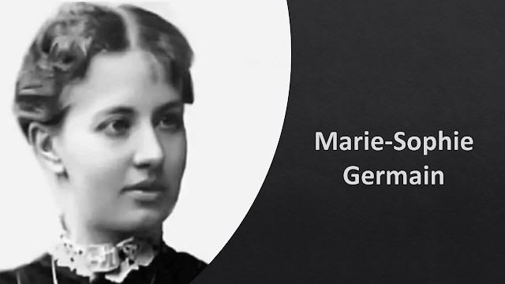
1776-1831 yılları arasında yaşayan Fransız matematikçi, fizikçi ve filozof Sophie Germain, kadınlara yönelik önyargılar yüzünden resmi bir matematik eğitimi alamadı ve akademik bir kariyer kuramadı; buna rağmen bağımsız biçimde çalışmalarını sürdürdü. Sayılar teorisi üzerine, kadın olduğunu gizlemek için kullandığı "M. Le Blanc" takma adıyla yazıştığı Carl Friedrich Gauss, gerçek kimliğini öğrendiğinde ona hayranlığını gizlemedi. Germain'in Fermat'nın Son Teoremi üzerine yaptığı kısmi ispat, bugün "Sophie Germain asalları" olarak anılan sayılarla bağlantılı olup, konunun sonraki yüzyıllarda incelenmesine temel oluşturdu. Elastik yüzeylerin titreşimi üzerine yazdığı tezle 1816'da Fransız Bilimler Akademisi'nin büyük ödülünü kazanan Germain, bu ödülü alan ilk kadın oldu.
Gauss, ölümünden kısa süre önce Göttingen Üniversitesi'nden kendisine fahri doktora unvanı verilmesini önermişti. Ne var ki Germain, bu unvanı hiç alamadan 27 Haziran 1831'de göğüs kanserinden hayatını kaybetti.
Grace Murray Hopper
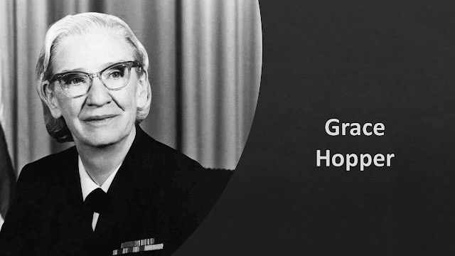
Amerikalı bilgisayar bilimcisi ve ABD Donanması'nda tuğamiral rütbesine kadar yükselen Grace Hopper, Harvard Mark I bilgisayarının ilk programcılarından biriydi. Bilgisayar programlama dilleri için ilk derleyiciyi (compiler) geliştirdi ve ilk modern programlama dillerinden biri olan COBOL'un geliştirilmesine öncülük eden isimlerden oldu. 9 Eylül 1947'de, ekibiyle birlikte çalıştığı Harvard Mark II bilgisayarının rölelerinden birine sıkışmış bir güve buldular; böceği kayıt defterine yapıştırıp "ilk gerçek böcek (bug) bulunma vakası" notunu düştüler. "Bug" ve "debug" terimleri aslında bu olaydan önce de mühendislikte kullanılıyordu, ama Hopper'ın bu anıyı yıllarca konferanslarda anlatması, terimin bilgisayar dünyasında yerleşmesine büyük katkı sağladı. Bu tarihi kayıt defteri sayfası, bugün Washington'daki Smithsonian Amerikan Tarihi Müzesi'nde sergileniyor.
Ada Lovelace
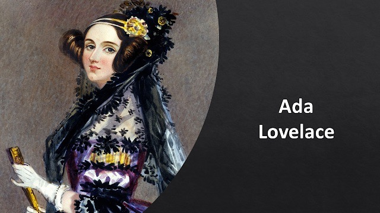
1815-1852 yılları arasında yaşayan İngiliz matematikçi ve yazar Ada Lovelace, şair Lord Byron'ın kızıydı; annesi, kızının babası gibi "tehlikeli" bir hayal gücü geliştirmesinden çekinerek onu küçük yaştan itibaren matematik ve mantık eğitimine yönlendirmişti. Lovelace, Charles Babbage'ın erken dönem mekanik bilgisayarı "Analitik Motor" üzerine yaptığı çalışmalarla tanınır. İtalyan mühendis Luigi Menabrea'nın makine hakkında yazdığı bir yazıyı İngilizceye çevirirken, orijinal metinden üç kat daha uzun kendi notlarını ekledi; bu notlar arasında, günümüzde bir bilgisayar için yazılmış ilk algoritma olarak kabul edilen, Bernoulli sayılarını hesaplamaya yönelik bir dizi talimat da bulunuyordu. Bu nedenle Ada Lovelace, çoğu zaman bilgisayar programcılığının kavramsal öncüsü olarak anılır ve her yıl Ekim ayında "Ada Lovelace Günü" ile anılıyor.
Elizabeth Helen Blackburn
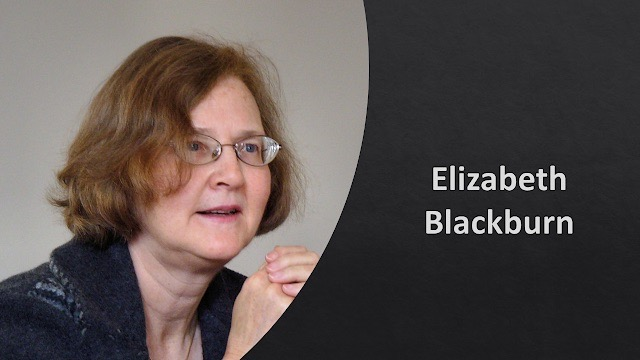
26 Kasım 1948'de Tazmanya'da doğan, Avustralya asıllı Amerikalı moleküler biyolog Elizabeth Blackburn, kromozomların uç kısımlarını koruyan "telomer" yapıları üzerine çalıştı. 1984'te Carol Greider ile birlikte, telomerleri üreten telomeraz enzimini keşfetti. Bu keşifler nedeniyle 2009'da Greider ve Jack W. Szostak ile birlikte Nobel Fizyoloji veya Tıp Ödülü'nü kazandı. Kariyeri boyunca tıbbi etik konularında da aktif rol aldı; 2001-2004 yılları arasında ABD Başkanlığı Biyoetik Konseyi üyesiyken, kök hücre araştırmaları politikaları konusundaki görüş ayrılıkları nedeniyle 2004'te görevden alınması, bilim ve siyaset ilişkisi üzerine geniş bir tartışma başlatmıştı.
Kaynaklar:
- https://tr.wikipedia.org/wiki/Marie_Curie (tr.wikipedia.org/wiki/Marie_Curie)
- https://tr.wikipedia.org/wiki/Ada_Lovelace (tr.wikipedia.org/wiki/Ada_Lovelace)
- https://tr.wikipedia.org/wiki/Sophie_Germain (tr.wikipedia.org/wiki/Sophie_Germain)
- https://tr.wikipedia.org/wiki/Mary_Anning (tr.wikipedia.org/wiki/Mary_Anning)
- https://tr.wikipedia.org/wiki/Dorothy_Hodgkin (tr.wikipedia.org/wiki/Dorothy_Hodgkin)
- https://tr.wikipedia.org/wiki/Lise_Meitner (tr.wikipedia.org/wiki/Lise_Meitner)
- https://tr.wikipedia.org/wiki/Barbara_McClintock (tr.wikipedia.org/wiki/Barbara_McClintock)
- https://tr.wikipedia.org/wiki/Elizabeth_Blackburn (tr.wikipedia.org/wiki/Elizabeth_Blackburn)
- https://tr.wikipedia.org/wiki/Grace_Hopper (tr.wikipedia.org/wiki/Grace_Hopper)
- https://tr.wikipedia.org/wiki/Jocelyn_Bell_Burnell (tr.wikipedia.org/wiki/Jocelyn_Bell_Burnell)
- https://tr.wikipedia.org/wiki/Maria_Mitchell (tr.wikipedia.org/wiki/Maria_Mitchell)
- https://tr.wikipedia.org/wiki/Hypatia https://tr.wikipedia.org/wiki/Rosalind_Franklin (King's College London ve Nature kaynaklarıyla teyit edildi) (tr.wikipedia.org/wiki/Hypatiahttps://tr.wikipedia.org/wiki/Rosalind_Franklin (King)
- Thatcher bağlantısı için (en.wikipedia.org/wiki/Dorothy_Hodgkin)
- doktora tarihi teyidi için (www.nobelprize.org/stories/women-who-changed-science/marie-curie)
- fahri doktora teyidi için (www.britannica.com/biography/Sophie-Germain)
- Hopper'ın güve anekdotu için (americanhistory.si.edu/collections/object/nmah_334663)


Yorumlar ve Değerlendirmeler